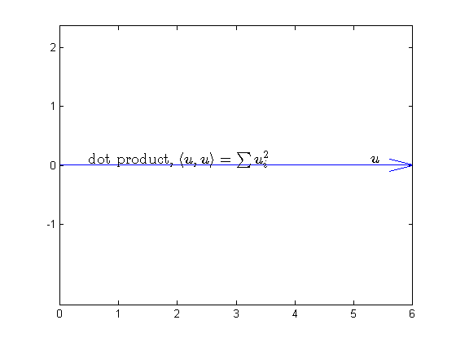
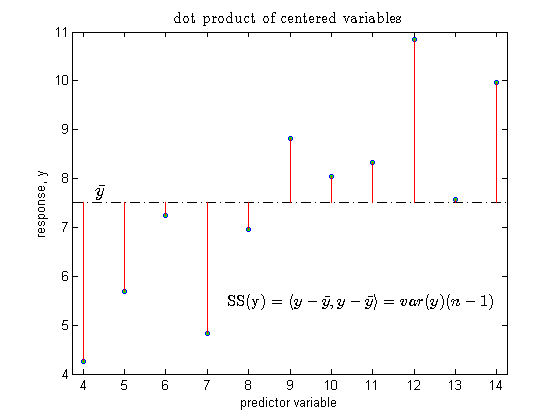
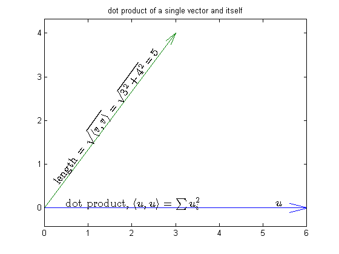
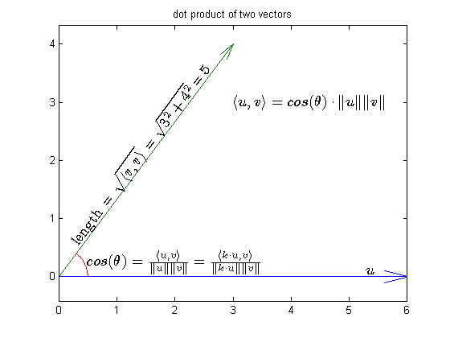
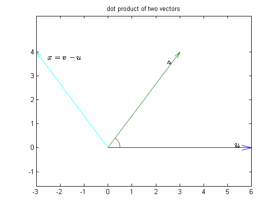
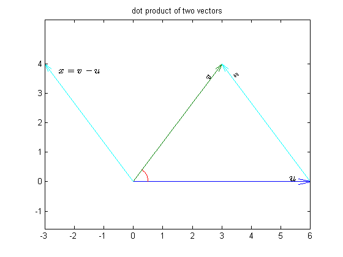
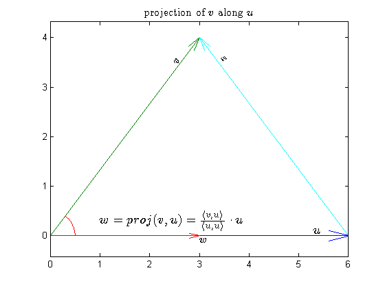
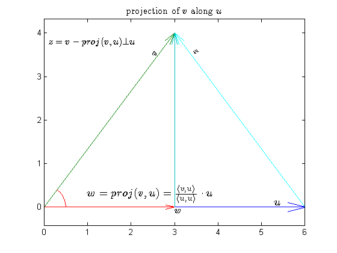

inner product spaces and orthogonality
demonstration of dot product, orthogonality also includes some vector addition. Information from this tutorial is used in qr decomposition and multiple regression regression approach to statistics
Contents
dot product of a vector, u
The dot product of u and itself, written u,u is equal the length squared. For a nx1 vector, u, the dot product can be shown in algebraic terms as u(1)*u(1) + u(2)*u(2) + ... + u(n)*u(n) This can also be written more conscisely in matrix notation as u'*u. Since the dot product of a vector and itself is always positive its square root is always defined and is equal to its length. Vectors of length 1 are called unit vectors. Any vector can be normalized to length 1 by dividing each of its elements by the length of the vector The figure shows a vector, u, extending from the origin to a point (6,0), thus its length is 6. In this case the vector u has only two elements, but the dot product has the same interpretation for vectors of any dimensionality
% load the data load orth_tut; quiver( 0,0,u(1),u(2),0); axis equal; set( gca, 'xtick', -6:6, 'ytick', -1:4); text( 5.3, .1, '$u$', 'fontsize', 14,'interpreter', 'latex'); text(.5,.1, 'dot product, $\langle u,u \rangle = \sum{u_i^2}$',.... 'interpreter', 'latex', 'fontsize', 14);
dot product of centered variables
The dot product of a vector with a mean of zero has meaning in the context of simple linear regression. Take the simple linear model y(i) = beta + error(i) where beta is a contant and y is some response vector of length n. The least squares estimate of beta turns out to be the mean of y, ybar. y(i) = ybar + e(i) Thus, it follows that the residual error, e(i) = y(i) - ybar It can be seen that the estimated error vector, e, is the centered y vector, y - ybar; We shall demonstrate this with a figure. The top panel of the figure shows the value of y(i) in the order they appear. The dashed line labeled ybar is shown at the mean value of y. The bottom panel shows y minus ybar. As we discussed, these are the estimated error values from the simple linear model. The stem plot emphasises the distance of each value from the grand mean. Note that this plot is similar to the top plot but it has a different label on the y-axis and the presence of the stems extending from the mean line to each error value. The sum of the squared errors, sum(e.^2), or SSE, can now be seen to be equivalent to the dot product of e, i.e. e,e, which is equivalent to y-ybar,y-ybar. So the interpretation is that the SSE is equal the squared length of the estimated error vector. Variance is the average SSE (after adjusting for the degrees of freedom). Thus the variance of e is e,e/(n-1), where n is the total number of observations. This is also called the mean square error (MSE). Standard deviation is the square root of the variance, or the average length of the errors. More generally, the dot product of a centered variable is equivalent to the variance times the degrees of freedom. If x0(i) = x(i) - xbar, and i = 1 .. a, then var(x0) = x0,x0*(a-1).
load remedial.mat clf, set(gca,'nextplot', 'replace') x = xx(:,1); y = yy(:,1); ybar = mean(y); e = y - ybar; plot(xx(:,i), y, 'o', 'markerfacecolor', 'g', 'markersize', 4 ); border = [ -.25 .25 0 0 ]; a = axis + border; axis(a); ylabel('response, y'); xlabel('predictor variable'); h = refline( 0, mean(y) ); set(h,'linestyle', '-.', 'color', 'k'); text( 4.3, ybar + .2, '$\bar{y}$', 'interpreter', 'latex',... 'fontsize', 14); a = .075; for i = 1:length(y) line( [x(i) x(i) ], [ybar, y(i)], 'color', 'r' ); end; h_label = text(7.5,5.5, 'SS(y) = $\langle y-\bar y,y-\bar y \rangle = var(y)(n-1)$',.... 'interpreter', 'latex', 'fontsize', 12); title('dot product of centered variables', 'fontsize', 12, 'interpreter', 'latex');
visualizing two vectors
Two vectors, u and v, of the same dimensionality can be interpretted as having an origin of 0 and lying in a plane. In this way you can visualize the relative lengths and the angle between the vectors. This is illustrated in the figure for a 2-dimensional vector, v, where v = [ 3 4];
load orth_tut; quiver( 0,0,u(1),u(2),0); axis equal; set( gca, 'xtick', -6:6, 'ytick', -1:4); text( 5.3, .1, '$u$', 'fontsize', 14,'interpreter', 'latex'); h_ulabel = text(.5,.1, 'dot product, $\langle u,u \rangle = \sum{u_i^2}$',.... 'interpreter', 'latex', 'fontsize', 14); hold on; quiver(0,0,v(1), v(2), 0 ); h(3) = text( .25, .6, sprintf( ... 'length = $\\sqrt{\\langle v,v \\rangle} = \\sqrt{3^2 + 4^2} = %d$', norm(v)), ... 'interpreter', 'latex', 'fontsize', 14, 'rotation', 53.14); title('dot product of a single vector and itself')
dot product of two vectors
The dot product of two vectors, u and v, is defined as the angle between the vectors times the product of their lengths. thus, given two vectors, we find that the angle between them, theta, is the dot product of the two vectors divided by the product of their lengths. This is, of course, consistent with the case above where two identical vectors were used. This is because the angle between two identical vectors is 0, so the cos(0) = 1. Thus the dot product is the squared length of the vectors. The angle between two vectors does not depend on the magnitude of the vector. In other words the angle is invariant to scalar multiplication of the vectors. This is easily seen in the figure. Scalar multiplication changes the length of the vector but not its direction.
set(h_ulabel, 'visible', 'off'); theta = acos( dot(u,v)/(norm(u)*norm(v))); [x,y] = pol2cart( linspace(0,theta,20), .5 ); hold on; plot(x,y,'r'); h(1) = text( 3,3, ... '$ \langle u, v \rangle = cos(\theta) \cdot \|u\|\|v\| $', ... 'interpreter', 'latex', ... 'fontsize', 14); h(2) = text( .5, .25, ... '$ cos(\theta) = \frac{ \langle u, v \rangle }{\|u\|\|v\|} = \frac{ \langle k\cdot u, v \rangle }{\|k\cdot u\|\|v\| } $', ... 'interpreter', 'latex', ... 'fontsize', 14); title('dot product of two vectors');
the 3rd side
the remaining side of the triangle is the difference between the two vectors. Here it is drawn from the origin ...
hold on; set( h, 'visible', 'off'); x = v - u; h = quiver( 0, 0, x(1), x(2), 0, 'c' ); h(2) = text( -2.5, 3.75, '$x = v - u$', 'fontsize', 12, 'interpreter', 'latex'); text( 2.5, 3.5, '$v$', 'fontsize', 12, 'interpreter', 'latex', 'rotation', 53.14); axis equal; hold on;
the 3rd side
... and now it is moved to emmenating from the end of u.
hold on; x = v - u; quiver( u(1), u(2), x(1), x(2), 0, 'c' ); theta = acos( dot(x,w)/(norm(x)*norm(w))); text( 3.5, 3.5, '$x$', 'fontsize', 12, 'interpreter', 'latex', 'rotation', rad2deg(theta)); axis equal; hold on;
orthogonality
orthogonal vectors are vectors that have a dot product of zero i.e. x and v are orthogonal if x,v = 0 if x and u are orthogonal the angle between them is 90 degress and they statistically independent, uncorrelated and have 0 covariance. Given u, we can find an orthogonal vector z by solving z'*u = 0 There are infinite solutions to this because if z is orthogonal to u then k*z is also orthogonal. This follows because the angle between vectors is invariant to scalar multiplication. If we have a set of vectors, S, that are pairwise orthogonal (all possible pairs of vectors within the set are orthogonal) then S is said to be orthogonal. In addition, if each vector in S has unit length, then S is called orthonormal
projections
Project is the prinicipal used in least-squares regression. The projection of v along u is defined by a vector, w, where w = k*u = (dot(v,u)/dot(u,u)>)*u. This is shown in red in the figure below. The squared length of w compared to the squared length of u is some times interpreted as saying how much of u is explained by v. if the length of w is 0, then no part of u is explained by v and they are independent.
delete(h); k = dot(v,u)/dot(u,u); w = k*u; quiver( 0, 0, w(1), w(2), 0 ); text( 3, -.1, '$w$', 'fontsize', 12, 'interpreter', 'latex'); title( 'projection of $v$ along $u$', 'interpreter', 'latex', 'fontsize', 12); h = text( 1, 0.3, '$w = proj(v,u) = \frac{\langle v,u \rangle}{\langle u,u \rangle}\cdot u$', ... 'interpreter', 'latex', 'fontsize', 14);
v - w is orthogonal to u
the vector, z, resulting from the difference of v and w is orthogonal to u. This is also call the residual error, or the unexplained error.
z = v - w; h(2) = quiver( w(1), w(2), z(1), z(2), 0 ); h(3) = text( .1, 3.8, '$z = v - proj(v,u) \bot u$', 'fontsize', 12, 'interpreter', 'latex');
summary
- the dot product of a vector and itself is equal to the squared length of that vector
- a vector, v, projected onto another vector, u, is given by k*u, where k is the scalar result of dot(u,v)/dot(u,u)
- the cosine of angle between two vectors, u and v, is the dot product of u and v divided by the products of the length of u and v
- vectors with an angle of 90 degrees are orthogonal
- the difference between a vector, v, and the projection of v onto another vector u, is orthogonal to u and is the residual error
Regression
least-squares regression can be interetted in terms of centered vectors. I'll start with a regression with 3 observations on one variable, x. I'll show the three observations as a vector in 3d space. The explanatory variable in blue. When we regress y onto x we are projecting onto x and I'll show the projection in green. The green vector is equivalent to the location of the predicted values of y. The residuals are othogonal and form the 3rd side of the triangle, shown in red. Statistical tests are often compares based on the relative lengths of each side. For example r2 = sum(w.^2)/sum(y.^2). also notice that sum(y^2) = sum(z^2) + sum(w^2), according to the Phythogrean therom. Notice that I've center the variables so we can do without an intercept term.
clf load moore; % encode scaled continuous variables range -1 1 glm = encode( [], -2, 1, -moore(1:3,1), moore(1:3,3) ); y = glm.dmat(:,2); x = glm.dmat(:,3); b = x\y; % least-squares regression of v on u. w = x*b; % the model predicted response at each u z = w - y; % the residuals quiver3( 0, 0, 0, x(1), x(2), x(3), 0, 'k', 'linewidth', 3 ); hold on; quiver3( 0, 0, 0, y(1), y(2), y(3), 0, 'b' ) quiver3( 0, 0, 0, w(1), w(2), w(3), 0, 'g', 'linewidth', 3 ); hold on; quiver3( y(1), y(2), y(3), z(1), z(2), z(3), 0, 'r' ); hold on;
Undefined function or method 'mrange' for input arguments of type 'double'.
Regression II
Above I showed a problem with only 3 observations, so that the entire vectors could be plotted in 3d space. This isn't really necessary. Since there are only two vectors and the origin, they will lie in a plane so we can just rotate so we are looking square at that plane. The only thing we're usually after is the relationships between the sides. So long as we only have one prediction variable and 1 response, we only need 2 dimensions to see the relavent information. To demonstrate I'll use SVD to find a suitable projection of 3d triangle into 2d. The triangle sides are the same length as before, so all the information is retained.
figure load moore; glm = encode( [], -2, 1, -moore(1:3,1), moore(1:3,3) ); y = glm.dmat(:,2); x = glm.dmat(:,3); b = dot(x,y)/dot(x,x); % use projection (same as x\y) w = x*b; % the model predicted response at each u z = w - y; % project into 2d using svd (variables should already be centered) [U,S] = svd( [x y w z]' ); % U is orthonormal project U = U*S; % scaled back to original dimensions, % but now in 2d xx = U(1,1:2); yy = U(2,1:2); ww = U(3,1:2); zz = U(4,1:2); quiver( 0, 0, xx(1), xx(2), 0, 'k', 'linewidth', 3 ); hold on; quiver( 0, 0, yy(1), yy(2), 0, 'b' ); quiver( 0, 0, ww(1), ww(2), 0, 'g', 'linewidth', 1 ); quiver( yy(1), yy(2), zz(1), zz(2), 0, 'r' );
Regression III
Finally I'll show the same example using all the observations. Again I'll use SVD to find a 2d projection.
figure load moore; glm = encode( [], -2, 1, moore(:,1), moore(:,3) ); % use ALL observatons y = glm.dmat(:,2); x = glm.dmat(:,3); b = dot(x,y)/dot(x,x); % use projection (same as x\y) w = x*b; % the model predicted response at each u z = w - y; % project into 2d using svd (variables should already be centered) [U,S,D] = svd( [x y w z]' ); % U is orthonormal project U = U*S; % scaled back to original dimensions, % but now in 2d xx = U(1,1:2); yy = U(2,1:2); ww = U(3,1:2); zz = U(4,1:2); quiver( 0, 0, xx(1), xx(2), 0, 'k', 'linewidth', 3 ); hold on; quiver( 0, 0, yy(1), yy(2), 0, 'b' ); quiver( 0, 0, ww(1), ww(2), 0, 'g', 'linewidth', 1 ); quiver( yy(1), yy(2), zz(1), zz(2), 0, 'r' );
Multiple Regression
When there are more than one predictor variable, the first step is to create a set of independent predictors. In essence this is a series of projections. Each step in the series makes the new predictor independent of the previous predictors. When the series is done new variables are scaled to unit variance. One method for doing this is QR decomposition (aka orthogonal-triangular decomposition). Given an m x n matrix, A, qr decomposition produces an orthogonal matrix, q, and an triangular matrix r where A = q*r.
figure set(gcf,'units','normalized'); b = .07; text( .1, .9, 'given $A_{mxn}$ find $q$ and $r$ such that', 'interpreter','latex', 'fontsize', 14 ); text( .2, .83, '$A = qr$', 'interpreter','latex', 'fontsize', 14 ); text( .2, .76, '$q$ and $r$ have the following properties', 'interpreter','latex', 'fontsize', 14 ); text( .25, .69, '$q''q = I$', 'interpreter','latex', 'fontsize', 14 ); text( .25, .62, '$qq'' = H$', 'interpreter','latex', 'fontsize', 14 ); text( .30, .55, 'where $H*y = \hat{y}$', 'interpreter','latex', 'fontsize', 14 ); text( .30, .48, '$diag(H) = leverage$', 'interpreter','latex', 'fontsize', 14 ); text( .25, .41, '$\hat{\beta} = r^{-1}q''y$', 'interpreter','latex', 'fontsize', 14 ); text( .25, .34, '$\hat{\beta} = r^{-1}(r''^{-1}(A''y))$', 'interpreter','latex', 'fontsize', 14 ); text( .25, .27, '$r''r = A''A$', 'interpreter','latex', 'fontsize', 14 ); set(gca, 'xtick', [],'ytick', []);
QR demonstration
Here is how to do a qr decomposition using a series of projections as described above. Note that the results are equivalent within rounding error to matlabs qr routine up to the sign. I'm not sure what convention matlab follows on this, but several solutions to A = q*r are possible if the sign is free to change. I will use the moore dataset again, but this time we'll use more predictor variables.
% create a multiple regression problem load moore % encode using centered and scaled predictors glm = encode( moore(:,3), 0, 1, moore(:,1), moore(:,2), moore(:,4) ); % three predictors x = glm.dmat; [m,n] = size(x); % m observations, n variables Q = zeros(m,n); % for the standardized residuals R = zeros(n,n); % for the coefficients for i = 1:n v = x(:,i); % regress the next x value u = zeros(m,1); % start by regressing against the origin w = zeros(m,1); % projection to origin z = w-v; % residuals if ( i > 1 ) % if this isn't the first predictor variable ... j = i-1; % regress against the previous i-1 sets of residuals while j >= 1 u = Q(:,j); % residuals from previous regressions b = dot(v,u)/dot(u,u); % estimate coefficient R(j,i) = b; % save coefficient w = w + b*u; % accumulate yhat. These are additive % because they are orthogonal j = j- 1; end z = w - v; % residuals from the set of regressions end b = sign(mean(z))*norm(z); R(i,i) = b; % store coefficients Q(:,i) = -z/b; % each Q(:,i) is orthogonal to all previous end; [q,r] = qr(x,0); % for comparison